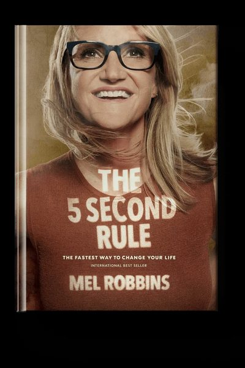

Library › Self-Improvement
The 5 Second Rule — Summary & Key Lessons

Transform your life, work, and confidence with everyday courage — 5-4-3-2-1-GO.
📖 OPEN THE FULL INTERACTIVE BREAKDOWN →🌐 Read it in Hindi, Hinglish, Gujarati, Tamil & 22 more languages — free, with audio.
💡 The Big Idea
The gap between knowing and doing has a precise width: about five seconds. When instinct says 'speak up / get up / start now,' the brain needs roughly that long to manufacture the excuses that kill it. Robbins' rule — the moment you feel an instinct to act on a goal, count backwards 5-4-3-2-1 and physically MOVE — works as a 'starting ritual' with real neuroscience underneath: counting backward interrupts rumination (you can't count and catastrophize simultaneously), shifts control from the habit-looping basal ganglia to the prefrontal cortex, and the physical movement beats the 'activation energy' hump. Its deeper premises: motivation is garbage (you will never FEEL ready — feelings are the problem, not the fuel), confidence is not a personality trait but a SKILL built by acts of everyday courage, and anxiety can be flipped into excitement because physiologically they're twins (reframe 'I'm nervous' as 'I'm excited' — the body agrees). Five seconds of courage, compounded daily, is the whole self-improvement industry in a countdown.
🧠 The 4 Key Lessons
Lesson 1: The Activation Energy Problem: Why You Freeze
Parts 1-2
Every goal dies the same death: instinct fires ('raise your hand,' 'go talk to them,' 'start the workout') → brain detects effort/risk → in ~5 seconds it deploys protection (overthinking, 'later,' phone-checking) → the moment passes. This isn't weakness; it's design — the brain is an energy-conserving, risk-avoiding machine that treats new and uncomfortable as threats. Waiting to 'feel ready' is therefore structurally hopeless: the feeling arrives AFTER action, not before. The rule attacks the gap mechanically: 5-4-3-2-1 is short enough to beat the excuse factory, weird enough to interrupt the loop, and ends in mandatory physical movement — because motion changes state where thought cannot.
📖 Example: Robbins invented it at rock bottom: 41, unemployed, marriage and finances collapsing, hitting snooze for hours every morning. One night she saw a rocket launch on TV and made a deal: tomorrow, launch out of bed like NASA — 5-4-3-2-1, feet on floor, no… Read the full example →
⚡ Do this: Tonight, set tomorrow's alarm across the room. When it rings: 5-4-3-2-1, feet on the floor, no snooze, no phone for 30 minutes. Run this one launch for 7 straight days before adding any other use of the rule.
Lesson 2: Everyday Courage: Confidence Is a Rep Count
Parts 3-4
We treat confidence as a prerequisite ('once I'm confident, I'll speak up'); Robbins inverts it: confidence is the RESIDUE of courageous reps — each 5-second act (asking the question, sending the pitch, introducing yourself) deposits proof that you act despite fear, and identity updates to match the evidence. The highest-leverage reps: SPEAK (say the idea in the meeting within 5 seconds of thinking it — hesitation lets the inner censor win and teaches the room you're furniture), START (begin the intimidating project for just 5 minutes; starting is the skill, finishing follows), and SHOW UP (the gym, the event, the difficult conversation — attendance is 80% of transformation). Fear doesn't shrink first; your action shrinks it afterward.
📖 Example: Her signature workplace case: the woman who'd spent YEARS silent in meetings — brilliant in hallways, invisible at the table — used the rule to speak within 5 seconds of forming a thought, before self-editing could engage. Within months: known, promoted, and… Read the full example →
⚡ Do this: In your next three meetings, apply the speak-rule: the moment you have a relevant thought, 5-4-3-2-1 and voice it — imperfectly phrased is fine. Track the count. The goal is reps, not eloquence.
Lesson 3: Flip Anxiety, Beat Worry, Guard the Morning
Part 5
Three power applications. FLIP ANXIETY: nerves and excitement are physiologically identical (racing heart, cortisol) — the label is the lever; Harvard research shows saying 'I am excited' before performance beats 'calm down' (you can't sedate arousal, but you can redirect it — pair it with a 5-4-3-2-1 launch into the task). BEAT WORRY: worry is default-mode drift; catch it with the countdown, then re-anchor ('what am I grateful for right now? what do I actually control?') — Robbins pairs the rule with deliberate thought-replacement because a stopped thought needs a successor. GUARD THE MORNING: the first hour sets the brain's momentum — her stack: no snooze (the rule), no phone for 30 minutes (someone else's agenda can wait), one 5-second brave act before 9 AM. The rule is a hinge: tiny door, whole rooms open.
📖 Example: The public-speaking flip: Robbins — who now speaks to arenas — still gets the full fear cascade backstage. Her protocol isn't calm; it's conversion: 'I'm excited' said out loud, 5-4-3-2-1, walk to the mic. She cites Alison Wood Brooks' Harvard studies:… Read the full example →
⚡ Do this: Before your next high-stakes moment: say 'I'm excited' out loud three times, then 5-4-3-2-1 into the first action (dial, walk in, hit send). Afterward, note what the fear did once you were moving — build your own evidence file.
Lesson 4: The Rule at Work: Procrastination, Ideas, and the Talk You Keep Postponing
Part 4: Courage Changes Everything
Robbins' deeper research chapter reframes procrastination: it is NOT laziness or poor time management — it's a STRESS-RELIEF habit (avoiding the task relieves the anxiety the task triggers, which rewards the avoidance, which builds the loop). That's why plans and apps fail: they treat a scheduling problem when the real event is an emotional flinch — and the 5-second countdown works precisely because it interrupts the flinch before the relief-seeking kicks in: feel the dread, 5-4-3-2-1, start ANY 5-minute version of the task (research shows starting dissolves the anxiety that avoiding feeds). Same mechanics rescue IDEAS (the window between 'I should build that' and self-censorship is seconds wide — capture or launch within it: write it down, send the first email, register the domain) and HARD CONVERSATIONS (the feedback, the apology, the ask for a raise — each has a 5-second doorway when the impulse is hot; miss it and the rationalization machine wins for another month). The compounding math is Robbins' closer: five seconds of courage, three times a day, is a thousand brave actions a year — an entirely different life, built from moments too small to resist.
📖 Example: The case Robbins retells from her own career: the idea for her TEDx talk pitch — she acted within seconds of the impulse, sending the rough email before doubt loaded; that talk (28 million views) built everything that followed. Against it she stacks the… Read the full example →
⚡ Do this: Identify your single most avoided task and your single most postponed conversation. For the task: tomorrow, 5-4-3-2-1 into a timed 5-minute start — nothing more owed. For the conversation: the next time the thought arises, count down and send only the scheduling message ('got 15 minutes this week?'). Let the calendar do the courage after that.
✅ 5-Step Action Plan
- Use the rule on one anchor habit first: 5-4-3-2-1 out of bed, 7 days straight.
- Speak within 5 seconds of having the thought — reps over eloquence.
- Start dreaded tasks for just 5 minutes; let momentum handle the rest.
- Relabel nerves as excitement out loud before every performance.
- Protect the first 30 phone-free minutes — win the morning's momentum.
💬 Best Quotes from The 5 Second Rule
- “You are never going to feel like it.”
- “Hesitation is the kiss of death. You hesitate, you lose.”
- “Courage is just moving before your brain talks you out of it.”
Interactive version: mark lessons as read, listen in your language, share quote cards.